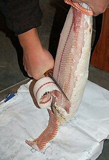

The fish for stroganina is usually caught by ice fishing during the late fall and fresh frozen in order to avoid the formation of ice crystals in the meat
Before the preparation of stroganina, strips of skin are cut from the back and abdomen from tail to head. Vertical incisions are made in the flesh. The fish is placed head down on a hard surface and skinned. Thin slices of fish fillet cut along the body using a sharp knife.[11] The geometry of the Yakutian knife is best suited to cut long slices that will form ribbon curls. In order to keep the slices frozen as long as possible, the stroganina is served immediately on non-metallic frozen plates or in ice-cold bowls with salt and black pepper powder.It is usually eaten with the hands while still frozen. Stroganina, like caviar, is often consumed with vodka.
